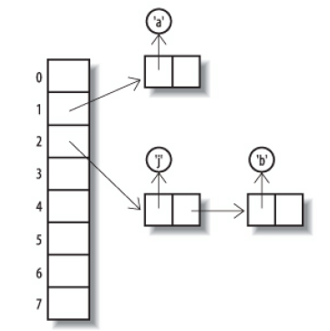
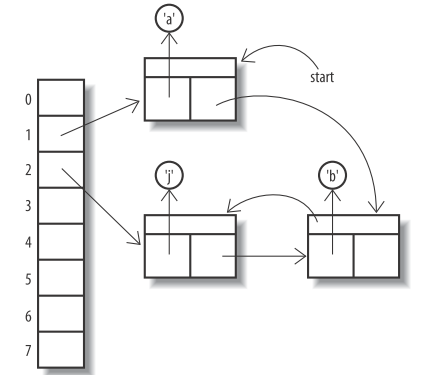

Java Collections
Table of Contents
1 Collection Interface
Iterator<E> iterator() returns an object that implements the Iterator interface.
In addition, it delcares quite a few methods, int size(), boolean isEmpty(), boolean contains(Object obj),
boolean containsAll(Collection<?> c), boolean equals(Object oth), boolean add(E c),
boolean addAll(Collection<? extends E> f), boolean remove(Object obj), boolean removeAll(Collection<?> c),
void clear(), Object[] toArray().
There is no get method.
To simple the implemetation, abstract class AbstractCollection implements
all of them except size method and iterator method.
2 Iterator Interface
It has three methods
E next()to get the elements one by one, throwsNoSuchElementExceptionif you reach its end.boolean hasNext()to check if has more elements in it.void remove()to remove element returned by the last call tonextmethodUsually, iterator has been replaced by foreach statement, which uses iterator implicitly. But you cannot remove element in foreach block, you have to use remove method of iterator.
You should invoke hasNext method before next method.
Unlike iterator in c++, iterator in Java does not support "++" operation.
3 List
ArrayList and LinkedList are both types of List, they both hold elements in the order in which elements are inserted, the difference is not only performs for certain tyoes of operation, but also that LinkedList contains more operations than ArrayList.
Vector and Stack are randomly used, but you may see them in old code.
Arrays.asList(T...) (Arrays is subclass of Object) produces a List that is backed by a fixed-size array,
it makes sense that the only supported operations are the one that do not change the size of the array. You can
always pass the result of it as a constructor argument to any Collection.
The "unmodifiable" methods(like unmodifiableList, unmodifiableMap, etc) in the Collections class wrap the
container(like List, Map, etc) in a proxy that produces an UnsupprtedOperationException if you perfprm any
operation that modifies the container in any way.
List<String> a = Arrays.asList("qwe", "234"); //a.add("12"); //UnsupportedOperationException List<String> t = new LinkedList<String>(a); t.add("12dd"); List<String> q = Collections.unmodifiableList(t); //q.add("asdf"); //UnsupportedOperationException
3.1 ArrayList
The capacity of an object of ArrayList can be automatically adjusted when adding or removing elements.
If you already know how many elements you want to store, call ensureCapacity method before filling the array list.
ArrayList<Employee> staff = new ArrayList<Employee>(); staff.ensureCapacity(100); //use the add method to fill up staff.add(new Employee()) //use the set method only to replace a previously added element if(i<staff.size()) staff.set(i, new Employee()); //returns the actual number of elements in the array list. staff.size(); //reduce the storage capacity of the array list to its current size staff.trimToSize(); //copy the elements into an array Employee[] e = new Employee[staff.size()]; staff.toArray(a);
It is recomended to use an ArrayList instead of a Vector whenever you do not need synchronization.
3.2 LinkedList
It is expensive to remove an element from the middle of an array or array list.
add method addes an element at the end of a linked list.
listIteratoe method return a suninterface ListIterator. While Iterator can only move foward,
ListIterator is bidirectional. ListIterator extends Iterator, and has methods
void add(E e), E previous() and boolean hasPrevious(). You can use this add method to add an element
just before the element returned by the last call to next method(perhaps in the middle of a linked list), but
the iterator keeps at the position of the element returned by next method.
4 Set
A Set only holds one of each identical item, so the elements added to it must at least define equals method.
4.1 HashSet
Elements must define hashCode method.
There is no guarantee as to the order in which the elements will be returned when traversing the set.
It is unsychronized and not thread-safe.
Set<Character> s1 = new HashSet<Character>(8); s1.add('a'); s1.add('b'); s1.add('j');

Figure 1: hash table
When traversing the set, the order in which elements are returned depends on their hash code,
4.2 LinkedHashSet
It keeps the objects in the order in which they were added. Elements must define hashCode method.
It guarantees that its iterator will return their elements in the order in which the elements added.
It is unsychronized and not thread-safe.
Set<Character> s2 = new LinkedHashSet<Character>(8); Collections.addAll(s2, 'a', 'b', 'j');

Figure 2: linked hash table
4.3 CopyOnWriteArraySet
It is implemented as a thin wrapper around an instance of CopyOnWriteArrayList, which in turn is backed by an immutable array.
4.4 TreeSet
The interface Comparator has two methods: int compare(T o1, T o2) and boolean equals(Object obj).
The interface Comparable has one method: int compareTo(T o).
TreeSet keeps the objects
- in the order specified by Comparator which can be provided when constructing an empty tree set. or,
- in natural ordering of its elements. Elements must implement Comparable interface.
TreeSet is unsynchronized and not thread-safe.
4.5 SortedSet and NavigableSet
TreeSet has implemented NavigableSet, which extends SortedSet.
SortedSet will use compare method of its Comparator - or, if it does not have one, the compareTo method of its elements-instead of the elements's equals method to determine when elements are distinct.
Methods declared by the SortedSet interface:
- Getting the first and last elements
- E first()
- E last()
if the set is empty, these operations throw NoSuchElementException.
- Retrieving the Comparator
- Comparator<? super E> comparator()
returns the set's comparator if it has been given at the construction time.
Comparator<? super E>is used because SortedSet can rely on a Comparator defined on any super type of E.
- Comparator<? super E> comparator()
- Getting range views
What you do in the view will be reflected in the original set.
The arguments to these methods do not themselves have to be members of the set.
- SortedSet<E> subSet(E from, E to)
returns a view containing every element of the original set that is greater than or equal to from and less than to
- SortedSet<E> headSet(E to)
returns a view containing every element of the original set that is less than to.
- SortedSet<E> tailSet(E from)
returns a view containing every element of the original set that is greater than or equal to from.
- SortedSet<E> subSet(E from, E to)
Methods declared by NavigableSet:
- Getting and removing the first and last elements
- E pollFirst()
- E pollLast()
- Getting range views
- NavigableSet<E> subSet(E from, boolean fromInclusive, E to, boolean toInclusive)
- NavigableSet<E> headSet(E to, boolean toInclusive)
- NavigableSet<E> tailSet(E from, boolean fromInclusive)
- Getting closest matches
- E ceiling(E e)
returns the least element greater than, or equal to e
- E floor(E e)
returns the greatest element less than, or equal to e
- E higher(E e)
returns the least element strictly greater than e
- E lower(E e)
returns the greatest element strictly less than e
- E ceiling(E e)
- Navigating the set in reverse order
- NavigableSet<E> descendingSet()
returns a reverse-order view
- Iterable<E> descendingIterator()
returns a reverse-order iterator
- NavigableSet<E> descendingSet()
5 Maps
LinkedHashMap, HashMap and TreeMap implement the Map interface. HashMap provides the fastest lookpup technique, and does not hold elements in any apparent order. TreeMap keeps the keys sorted by ascending comparison order. LinkedHashMap keeps the keys in insertion order while retaining the lookup speed of the HashMap.
Any key must have an equals method. If the key is used in a hashed Map, it must also have a proper hashCode method. If the key is used in a TreeMap, it must implements Comparable interface.